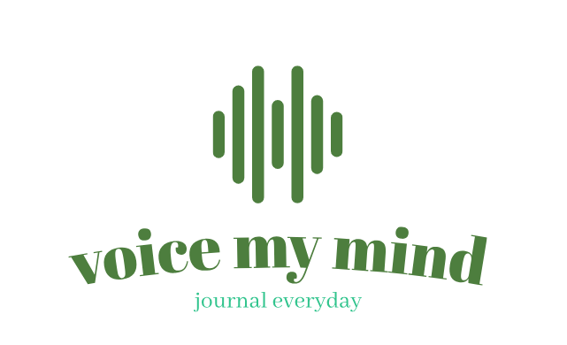

Harness the freedom of dictation to seamlessly capture your reflections,
unbound by the constraints of pen and paper. Pair your written musings
with evocative imagery, infusing your journal entries with new dimensions
of meaning.
Boundless Journaling
Immerse yourself in a boundless experience that transcends the ordinary.
Unleash your deepest thoughts, cultivate greater self-awareness, and
chronicle your path to wholeness - all within the comfort of our
user-friendly platform.
Journal Freely
Whether you seek clarity, catharsis, or a deeper connection to your true
self, our journaling tools are designed to elevate your mindful practice.
Unlock the door to emotional well-being and a life-affirming chronicle of
your most cherished moments.
Discover Wellness Insights

Delve into mental health resources. Gain deeper understanding. Embrace a
compassionate perspective. Empower your personal growth journey.
My Story
In this video, you'll learn about what inspired me to create the project.
I'll also walk through some of the key features and my plans for the future.
if the video is not playing use this
link.
About
This project was inspired by my own experience when i was councling my
patients and i found out that most of them are not able to express their
feelings and emotions. I realized that many people struggle to articulate
their thoughts and feelings, which can lead to a sense of isolation and
disconnection from themselves and others. Hence, the need for journaling is
as much important as the need for therapy. Journaling can be a powerful tool
for self-expression, self-discovery, and emotional healing. It can help us
make sense of our experiences, process our emotions, and gain clarity and
insight into our inner world.
I always wanted to create a software where i can help save many patients
before it gets worse and thanks to This project, a portfolio piece for my
time at
ALX School, where
I've been honing my skills as a full-stack developer. it enabled me to
achieve my dreams so in 2024, I set out to create a digital journaling
platform that would empower others to find their voice, explore their
emotions, and cultivate greater self-awareness.